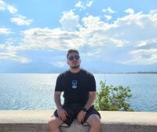

Roman Vafin
MY VACATION
About Me
- Full Name:Roman Vafin
- Phone:0547612495
- Email:Romanvafin2403@gmail.com
Hello There!
I am 34 years old, I live in Azur city. I have big Sister and little brother..
My Hobbies - I love to develop and learn something new every day, I love music, I love watching movies, I love watching football with friends, and most of all I love to travel to different countries and take pictures of beautiful places.
My Travels
-
Some of the Сountries I traveled to
-
Hungary
City Name - BudapestBudapest is the capital and most populous city of Hungary. It is the ninth-largest city in the European Union by population within city limits and the second-largest city on the Danube river; the city has an estimated population of 1,752,286 over a land area of about 525 square kilometres (203 square miles). Budapest, which is both a city and county, forms the centre of the Budapest metropolitan area, which has an area of 7,626 square kilometres (2,944 square miles) and a population of 3,303,786. It is a primate city, constituting 33% of the population of Hungary.
Turkey
City Name - AntalyaAntalya (Turkish pronunciation:[anˈtalja]) is the fifth-most populous city in Turkey as well as the capital of Antalya Province. It is seen as the "capital of tourism" in Turkey. Located on Anatolia's southwest coast bordered by the Taurus Mountains, Antalya is the largest Turkish city on the Mediterranean coast outside the Aegean region with over 2.6 million people in its metropolitan area. The city that is now Antalya was first settled around 200 BC by the Attalid dynasty of Pergamon, which was soon conquered by the Romans. Roman rule saw Antalya thrive, including the construction of several new monuments, such as Hadrian's Gate, and the proliferation of neighboring cities. The city has changed hands several times, including to the Seljuk Empire in 1207 and an expanding Ottoman Empire in 1391. Ottoman rule brought relative peace and stability for the next five hundred years.
Austria
City Name - ViennaVienna (viˈɛnə ;German: Wien [viːn]; Austro-Bavarian: Wean)is the capital, largest city, and one of nine provinces of Austria. Vienna is Austria's most populous city and its primate city, with about two million inhabitants (2.9 million within the metropolitan area, nearly one-third of the country's population), and its cultural, economic, and political center. It is the sixth-largest city proper by population in the European Union and the largest of all cities on the Danube river. Until the beginning of the 20th century, Vienna was the largest German-speaking city in the world, and before the splitting of the Austro-Hungarian Empire in World War I, the city had two million inhabitants. Today, it is the second-largest German-speaking city after Berlin.
Some of the Places I traveled to, in Israel
Rosh Hanikra
City Name - Kibuz Rosh hanikraRosh HaNikra or Hanikra (Hebrew: ראש הנקרה, lit. "Head of the Grotto"; Arabic: رأس الناقورة, Ras an-Nakura) is a geologic formation on the border between Israel and Lebanon, located on the coast of the Mediterranean Sea, in the Western Galilee. It is a white chalk cliff face which opens up into spectacular grottos. The Rosh HaNikra grottoes are cavernous tunnels formed by sea action on the soft chalk rock. The total length of the tunnels is some 200 meters. They branch off in various directions with some interconnecting segments. A tunnel was built by the British for the Haifa-Beirut railroad line, and in 1968 a second one was dug, both connecting the grottoes with each other and allowing access (currently: only exit) along the former route of the British railroad. For many years though, the only access to the grottoes was from the sea and the native swimmers and divers were the only ones capable of visiting. The 400 meters long tunnel dug in 1968 between the grottoes and slightly above sea level allowed easier access, and soon after a cable car was built to take visitors down from the top of the cliff to the tunnels. With a 60-degree gradient, this cable car is advertised as the steepest in the world.
Nahal Zavitan
City Name - KatzrinNahal Zavitan, found near Kazrin, is a beautiful hike with streams, deep pools and an impressive waterfall at its end. It is one of the most scenic routes in the Golan. The hike is a long linear hike of medium difficulty. This means one returns on the same path on the way back or one uses 2 cars and parks a car at each entrance. The route starts and ends in the Upper Zavitan (חניון נחל זוויתן) if you have 1 car. If you have 2 cars, one can be parked at the end of the route at the Yehudia parking lot (חניון יהודייה), This parking lot is part of the Yehudia reserve and therefore is a paid parking lot. Start the route on the red markings from the Zavitan parking lot. The first 30min of the walk involves a bit of climbing up and down boulders. Gradually pools will start to appear, but they are shallow and not appropriate for swimming. Continue walking for another 30-40 minutes and you will reach the black red trail junction. From here you will start to encounter deep pools appropriate for swimming. If you continue on the red route after about 10minutes you will get to the Zavitan pool, a beautiful pool decorated by hexagonal stones. After about another 15minutes of walking one will see the Zavitan waterfall, a 27 meter high waterfall. When you get to the blue and red trail junction, follow the blue path down to the waterfall. Once you are finished with the waterfall retrace your steps to the blue and red juntion and continue (follow the signs) for another hour to the Yehudia parking lot. The walk from Zavitan to Yehudia parking lot is about 8km.
Caesarea National Park
City Name - CaesareaCaesarea ( Hebrew: קֵיסָרְיָה, pronounced [keiˈsaʁja], Qesarya), also transliterated as Keisarya or Qaysaria, is an affluent town in north-central Israel, which was named after the ancient city of Caesarea Maritima situated in the southern part of the town. Located midway between Tel Aviv and Haifa on the coastal plain near the city of Hadera, it falls under the jurisdiction of Hof HaCarmel Regional Council. With a population of 5,783,[1] it is the only Israeli locality managed by a private organization, the Caesarea Development Corporation,and also one of the most populous localities not recognized as a local council.
Jordan River
The Jordan River or River Jordan (Arabic: نَهْر الْأُرْدُنّ, Nahr al-ʾUrdunn; Hebrew: נְהַר הַיַּרְדֵּן, Nəhar hayYardēn; Classical Syriac: ܢܗܪܐ ܕܝܘܪܕܢܢ Nahrāʾ Yurdnan), also known as Nahr Al-Sharieat (Arabic: نهر الشريعة), is a 251-kilometre-long (156 mi) river in the Middle East that flows roughly north to south through the Sea of Galilee (Hebrew: כנרת Kinneret, Arabic: Bohayrat Tabaraya, meaning Lake of Tiberias) and on to the Dead Sea. Jordan and the Golan Heights border the river to the east, while the West Bank and Israel lie to its west. Both Jordan and the West Bank take their names from the river. The river holds major significance in Judaism and Christianity. According to the Bible, the Israelites crossed it into the Promised Land and Jesus of Nazareth was baptized by John the Baptist in it